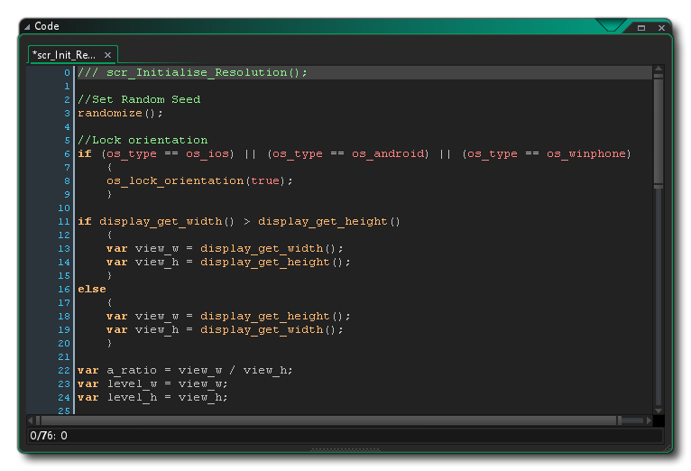

Un bloque de código consiste en un conjunto de instrucciones, llamadas declaraciones, que luego son interpretadas por GameMaker Studio 2 y utilizadas para hacer que algo suceda dentro de su juego. Ese "algo" puede ser tan simple como agregar 2 y 2 para obtener 4, o tan complejo como hacer huir a un enemigo cuando su salud está por debajo de un cierto valor. La estructura real del programa puede variar en gran medida, dependiendo de las funciones que utiliza, pero desglosado por conceptos básicos, se ve así:
<statement>;
<statement>;
...
Las declaraciones se deben separar con un ';' símbolo para evitar errores con declaraciones de variables y para mantener su código limpio y ordenado, y puede consistir en declaraciones de variables, expresiones y llamadas a funciones o scripts específicos. Aquí hay una representación más visual de cómo se puede ver un bloque de código, esta vez creado como una secuencia de comandos en el Editor de secuencias GameMaker Studio 2 comandos de GameMaker Studio 2: 
Hay varios tipos diferentes de declaraciones y funciones, que se discuten detalladamente en secciones posteriores del manual.